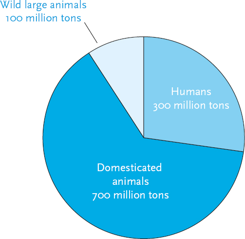
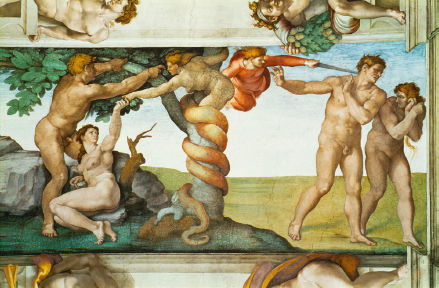
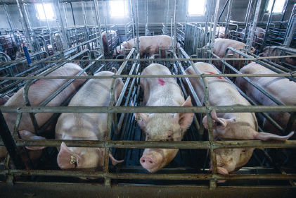
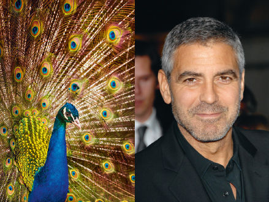

With regard to other animals, humans have long since become gods. We don’t like to reflect on this too deeply, because we have not been particularly just or merciful gods. If you watch the National Geographic channel, go to a Disney film or read a book of fairy tales, you might easily get the impression that planet Earth is populated mainly by lions, wolves and tigers who are an equal match for us humans. Simba the lion king holds sway over the forest animals; Little Red Riding Hood tries to evade the Big Bad Wolf; and little Mowgli bravely confronts Shere Khan the tiger. But in reality, they are no longer there. Our televisions, books, fantasies and nightmares are still full of them, but the Simbas, Shere Khans and Big Bad Wolves of our planet are disappearing. The world is populated mainly by humans and their domesticated animals.
How many wolves live today in Germany, the land of the Grimm brothers, Little Red Riding Hood and the Big Bad Wolf? Less than a hundred. (And even these are mostly Polish wolves that stole over the border in recent years.) In contrast, Germany is home to 5 million domesticated dogs. Altogether about 200,000 wild wolves still roam the earth, but there are more than 400 million domesticated dogs.1 The world contains 40,000 lions compared to 600 million house cats; 900,000 African buffalo versus 1.5 billion domesticated cows; 50 million penguins and 20 billion chickens.2 Since 1970, despite growing ecological awareness, wildlife populations have halved (not that they were prospering in 1970).3 In 1980 there were 2 billion wild birds in Europe. In 2009 only 1.6 billion were left. In the same year, Europeans raised 1.9 billion chickens for meat and eggs.4 At present, more than 90 per cent of the large animals of the world (i.e. those weighing more than a few kilograms) are either humans or domesticated animals.
Scientists divide the history of our planet into epochs such as the Pleistocene, the Pliocene and the Miocene. Officially, we live in the Holocene epoch. Yet it may be better to call the last 70,000 years the Anthropocene epoch: the epoch of humanity. For during these millennia Homo sapiens became the single most important agent of change in the global ecology.5
This is an unprecedented phenomenon. Since the appearance of life, about 4 billion years ago, never has a single species changed the global ecology all by itself. Though there had been no lack of ecological revolutions and mass-extinction events, these were not caused by the actions of a particular lizard, bat or fungus. Rather, they were caused by the workings of mighty natural forces such as climate change, tectonic plate movement, volcanic eruptions and asteroid collisions.

Pie chart of global biomass of large animals.
Some people fear that today we are again in mortal danger of massive volcanic eruptions or colliding asteroids. Hollywood producers make billions out of these anxieties. Yet in reality, the danger is slim. Mass extinctions occur once every many millions of years. Yes, a big asteroid will probably hit our planet sometime in the next 100 million years, but it is very unlikely to happen next Tuesday. Instead of fearing asteroids, we should fear ourselves.
For Homo sapiens has rewritten the rules of the game. This single ape species has managed within 70,000 years to change the global ecosystem in radical and unprecedented ways. Our impact is already on a par with that of ice ages and tectonic movements. Within a century, our impact may surpass that of the asteroid that killed off the dinosaurs 65 million years ago.
That asteroid changed the trajectory of terrestrial evolution, but not its fundamental rules, which have remained fixed since the appearance of the first organisms 4 billion years ago. During all those aeons, whether you were a virus or a dinosaur, you evolved according to the unchanging principles of natural selection. In addition, no matter what strange and bizarre shapes life adopted, it remained confined to the organic realm – whether a cactus or a whale, you were made of organic compounds. Now humankind is poised to replace natural selection with intelligent design, and to extend life from the organic realm into the inorganic.
Even if we leave aside these future prospects and only look back on the last 70,000 years, it is evident that the Anthropocene has altered the world in unprecedented ways. Asteroids, plate tectonics and climate change may have impacted organisms all over the globe, but their influence differed from one area to another. The planet never constituted a single ecosystem; rather, it was a collection of many loosely connected ecosystems. When tectonic movements joined North America with South America it led to the extinction of most South American marsupials, but had no detrimental effect on the Australian kangaroo. When the last ice age reached its peak 20,000 years ago, jellyfish in the Persian Gulf and jellyfish in Tokyo Bay both had to adapt to the new climate. Yet since there was no connection between the two populations, each reacted in a different way, evolving in distinct directions.
In contrast, Sapiens broke the barriers that had separated the globe into independent ecological zones. In the Anthropocene, the planet became for the first time a single ecological unit. Australia, Europe and America continued to have different climates and topographies, yet humans caused organisms from throughout the world to mingle on a regular basis, irrespective of distance and geography. What began as a trickle of wooden boats has turned into a torrent of aeroplanes, oil tankers and giant cargo ships that criss-cross every ocean and bind every island and continent. Consequently the ecology of, say, Australia can no longer be understood without taking into account the European mammals or American microorganisms that flood its shores and deserts. Sheep, wheat, rats and flu viruses that humans brought to Australia during the last 300 years are today far more important to its ecology than the native kangaroos and koalas.
But the Anthropocene isn’t a novel phenomenon of the last few centuries. Already tens of thousands of years ago, when our Stone Age ancestors spread from East Africa to the four corners of the earth, they changed the flora and fauna of every continent and island on which they settled. They drove to extinction all the other human species of the world, 90 per cent of the large animals of Australia, 75 per cent of the large mammals of America and about 50 per cent of all the large land mammals of the planet – and all before they planted the first wheat field, shaped the first metal tool, wrote the first text or struck the first coin.6
Large animals were the main victims because they were relatively few, and they bred slowly. Compare, for example, mammoths (which became extinct) to rabbits (which survived). A troop of mammoths numbered no more than a few dozen individuals, and bred at a rate of perhaps just two youngsters per year. Hence if the local human tribe hunted just three mammoths a year, it would have been enough for deaths to outstrip births, and within a few generations the mammoths disappeared. Rabbits, in contrast, bred like rabbits. Even if humans hunted hundreds of rabbits each year, it was not enough to drive them to extinction.
Not that our ancestors planned on wiping out the mammoths; they were simply unaware of the consequences of their actions. The extinction of the mammoths and other large animals may have been swift on an evolutionary timescale, but slow and gradual in human terms. People lived no more than seventy or eighty years, whereas the extinction process took centuries. The ancient Sapiens probably failed to notice any connection between the annual mammoth hunt – in which no more than two or three mammoths were killed – and the disappearance of these furry giants. At most, a nostalgic elder might have told sceptical youngsters that ‘when I was young, mammoths were much more plentiful than these days. And so were mastodons and giant elks. And, of course, the tribal chiefs were honest, and children respected their elders.’
The Serpent’s Children
Anthropological and archaeological evidence indicates that archaic hunter-gatherers were probably animists: they believed that there was no essential gap separating humans from other animals. The world – i.e. the local valley and the surrounding mountain chains – belonged to all its inhabitants, and everyone followed a common set of rules. These rules involved ceaseless negotiation between all concerned beings. People talked with animals, trees and stones, as well as with fairies, demons and ghosts. Out of this web of communications emerged the values and norms that were binding on humans, elephants, oak trees and wraiths alike.7
The animist world view still guides some hunter-gatherer communities that have survived into the modern age. One of them is the Nayaka people, who live in the tropical forests of south India. The anthropologist Danny Naveh, who studied the Nayaka for several years, reports that when a Nayaka walking in the jungle encounters a dangerous animal such as a tiger, snake or elephant, he or she might address the animal and say: ‘You live in the forest. I too live here in the forest. You came here to eat, and I too came here to gather roots and tubers. I didn’t come to hurt you.’
A Nayaka was once killed by a male elephant they called ‘the elephant who always walks alone’. The Nayakas refused to help officials from the Indian forestry department capture him. They explained to Naveh that this elephant used to be very close to another male elephant, with whom he always roamed. One day the forestry department captured the second elephant, and since then ‘the elephant who always walks alone’ had become angry and violent. ‘How would you have felt if your spouse had been taken away from you? This is exactly how this elephant felt. These two elephants sometimes separated at night, each walking its own path . . . but in the morning they always came together again. On that day, the elephant saw his buddy falling, lying down. If two are always together and then you shoot one – how would the other feel?’8
Such an animistic attitude strikes many industrialised people as alien. Most of us automatically see animals as essentially different and inferior. This is because even our most ancient traditions were created thousands of years after the end of the hunter-gatherer era. The Old Testament, for example, was written down in the first millennium BC, and its oldest stories reflect the realities of the second millennium BC. But in the Middle East the age of the hunter-gatherers ended more than 7,000 years earlier. It is hardly surprising, therefore, that the Bible rejects animistic beliefs and its only animistic story appears right at the beginning, as a dire warning. The Bible is a long book, bursting with miracles, wonders and marvels. Yet the only time an animal initiates a conversation with a human is when the serpent tempts Eve to eat the forbidden fruit of knowledge (Bil’am’s donkey also speaks a few words, but she is merely conveying to Bil’am a message from God).
In the Garden of Eden, Adam and Eve lived as foragers. The expulsion from Eden bears a striking resemblance to the Agricultural Revolution. Instead of allowing Adam to keep gathering wild fruits, an angry God condemns him ‘to eat bread by the sweat of your brow’. It might be no coincidence, then, that biblical animals spoke with humans only in the pre-agricultural era of Eden. What lessons does the Bible draw from the episode? That you shouldn’t listen to snakes, and it is generally best to avoid talking with animals and plants. It leads to nothing but disaster.
Yet the biblical story has deeper and more ancient layers of meaning. In most Semitic languages, ‘Eve’ means ‘snake’ or even ‘female snake’. The name of our ancestral biblical mother hides an archaic animist myth, according to which snakes are not our enemies, but our ancestors.9 Many animist cultures believed that humans descended from animals, including from snakes and other reptiles. Most Australian Aborigines believed that the Rainbow Serpent created the world. The Aranda and Dieri people maintained that their particular tribes originated from primordial lizards or snakes, which were transformed into humans.10 In fact, modern Westerners too think that they have evolved from reptiles. The brain of each and every one of us is built around a reptilian core, and the structure of our bodies is essentially that of modified reptiles.

Paradise lost (the Sistine Chapel). The serpent – who sports a human upper body – initiates the entire chain of events. While the first two chapters of Genesis are dominated by divine monologues (‘and God said . . . and God said . . . and God said . . .’), in the third chapter we finally get a dialogue – between Eve and the serpent (‘and the serpent said unto the woman . . . and the woman said unto the serpent . . .’). This unique conversation between a human and an animal leads to the fall of humanity and our expulsion from Eden.
Detail from Michelangelo Buonarroti (1475–1564), the Sistine Chapel, Vatican City © Lessing Images.
The authors of the book of Genesis may have preserved a remnant of archaic animist beliefs in Eve’s name, but they took great care to conceal all other traces. Genesis says that, instead of descending from snakes, humans were divinely created from inanimate matter. The snake is not our progenitor: he seduces us to rebel against our heavenly Father. While animists saw humans as just another kind of animal, the Bible argues that humans are a unique creation, and any attempt to acknowledge the animal within us denies God’s power and authority. Indeed, when modern humans discovered that they actually evolved from reptiles, they rebelled against God and stopped listening to Him – or even believing in His existence.
Ancestral Needs
The Bible, along with its belief in human distinctiveness, was one of the by-products of the Agricultural Revolution, which initiated a new phase in human–animal relations. The advent of farming produced new waves of mass extinctions, but more importantly, it created a completely new life form on earth: domesticated animals. Initially this development was of minor importance, since humans managed to domesticate fewer than twenty species of mammals and birds, compared to the countless thousands of species that remained ‘wild’. Yet with the passing of the centuries, this novel life form became dominant. Today more than 90 per cent of all large animals are domesticated.
Alas, domesticated species paid for their unparalleled collective success with unprecedented individual suffering. Although the animal kingdom has known many types of pain and misery for millions of years, the Agricultural Revolution generated completely new kinds of suffering, that only became worse over time.
To the casual observer domesticated animals may seem much better off than their wild cousins and ancestors. Wild boars spend their days searching for food, water and shelter, and are constantly threatened by lions, parasites and floods. Domesticated pigs, in contrast, enjoy food, water and shelter provided by humans, who also treat their diseases and protect them against predators and natural disasters. True, most pigs sooner or later find themselves in the slaughterhouse. Yet does that make their fate any worse than the fate of wild boars? Is it better to be devoured by a lion than slaughtered by a man? Are crocodile teeth less deadly than steel blades?
What makes the fate of domesticated farm animals particularly harsh is not just the way they die, but above all the way they live. Two competing factors have shaped the living conditions of farm animals from ancient times to the present day: human desires and animal needs. Thus humans raise pigs in order to get meat, but if they want a steady supply of meat, they must ensure the long-term survival and reproduction of the pigs. Theoretically this should have protected the animals from extreme forms of cruelty. If a farmer did not take good care of his pigs, they would soon die without offspring and the farmer would starve.
Unfortunately, humans can cause tremendous suffering to farm animals in various ways, even while ensuring their survival and reproduction. The root of the problem is that domesticated animals have inherited from their wild ancestors many physical, emotional and social needs that are redundant on human farms. Farmers routinely ignore these needs, without paying any economic penalty. They lock animals in tiny cages, mutilate their horns and tails, separate mothers from offspring and selectively breed monstrosities. The animals suffer greatly, yet they live on and multiply.
Doesn’t that contradict the most basic principles of natural selection? The theory of evolution maintains that all instincts, drives and emotions have evolved in the sole interest of survival and reproduction. If so, doesn’t the continuous reproduction of farm animals prove that all their real needs are met? How can a pig have a ‘need’ that is not really needed for his survival and reproduction?
It is certainly true that all instincts, drives and emotions evolved in order to meet the evolutionary pressures of survival and reproduction. However, if and when these pressures suddenly disappear, the instincts, drives and emotions they had shaped do not disappear with them. At least not instantly. Even if they are no longer instrumental for survival and reproduction, these instincts, drives and emotions continue to mould the subjective experiences of the animal. For animals and humans alike, agriculture changed selection pressures almost overnight, but it did not change their physical, emotional and social drives. Of course evolution never stands still, and it has continued to modify humans and animals in the 12,000 years since the advent of farming. For example, humans in Europe and western Asia evolved the ability to digest cows’ milk, while cows lost their fear of humans, and today produce far more milk than their wild ancestors. Yet these are superficial alterations. The deep sensory and emotional structures of cows, pigs and humans alike haven’t changed much since the Stone Age.
Why do modern humans love sweets so much? Not because in the early twenty-first century we must gorge on ice cream and chocolate in order to survive. Rather, it is because when our Stone Age ancestors came across sweet fruit or honey, the most sensible thing to do was to eat as much of it as quickly as possible. Why do young men drive recklessly, get involved in violent arguments and hack confidential Internet sites? Because they are following ancient genetic decrees that might be useless and even counterproductive today, but that made good evolutionary sense 70,000 years ago. A young hunter who risked his life chasing a mammoth outshone all his competitors and won the hand of the local beauty; and we are now stuck with his macho genes.11
Exactly the same evolutionary logic shapes the lives of pigs, sows and piglets in human-controlled farms. In order to survive and reproduce in the wild, ancient boars needed to roam vast territories, familiarise themselves with their environment and beware of traps and predators. They further needed to communicate and cooperate with their fellow boars, forming complex groups dominated by old and experienced matriarchs. Evolutionary pressures consequently made wild boars – and even more so wild sows – highly intelligent social animals, characterised by a lively curiosity and strong urges to socialise, play, wander about and explore their surroundings. A sow born with some rare mutation that made her indifferent to her environment and to other boars was unlikely to survive or reproduce.
The descendants of wild boars – domesticated pigs – inherited their intelligence, curiosity and social skills.12 Like wild boars, domesticated pigs communicate using a rich variety of vocal and olfactory signals: mother sows recognise the unique squeaks of their piglets, whereas two-day-old piglets already differentiate their mother’s calls from those of other sows.13 Professor Stanley Curtis of the Pennsylvania State University trained two pigs – named Hamlet and Omelette – to control a special joystick with their snouts, and found that the pigs soon rivalled primates in learning and playing simple computer games.14
Today most sows in industrial farms don’t play computer games. They are locked by their human masters in tiny gestation crates, usually measuring two metres by sixty centimetres. The crates have a concrete floor and metal bars, and hardly allow the pregnant sows even to turn around or sleep on their side, never mind walk. After three and a half months in such conditions, the sows are moved to slightly wider crates, where they give birth and nurse their piglets. Whereas piglets would naturally suckle for ten to twenty weeks, in industrial farms they are forcibly weaned within two to four weeks, separated from their mother and shipped to be fattened and slaughtered. The mother is immediately impregnated again, and sent back to the gestation crate to start another cycle. The typical sow would go through five to ten such cycles before being slaughtered herself. In recent years the use of crates has been restricted in the European Union and some US states, but the crates are still commonly used in many other countries, and tens of millions of breeding sows pass almost their entire lives in them.
The human farmers take care of everything the sow needs in order to survive and reproduce. She is given enough food, vaccinated against diseases, protected against the elements and artificially inseminated. From an objective perspective, the sow no longer needs to explore her surroundings, socialise with other pigs, bond with her piglets or even walk. But from a subjective perspective, the sow still feels very strong urges to do all of these things, and if these urges are not fulfilled she suffers greatly. Sows locked in gestation crates typically display acute frustration alternating with extreme despair.15
This is the basic lesson of evolutionary psychology: a need shaped thousands of generations ago continues to be felt subjectively even if it is no longer necessary for survival and reproduction in the present. Tragically, the Agricultural Revolution gave humans the power to ensure the survival and reproduction of domesticated animals while ignoring their subjective needs.

Sows confined in gestation crates. These highly social and intelligent beings spend most of their lives in this condition, as if they were already sausages.
© Balint Porneczi/Bloomberg via Getty Images.
Organisms are Algorithms
How can we be sure that animals such as pigs actually have a subjective world of needs, sensations and emotions? Aren’t we guilty of humanising animals, i.e. ascribing human qualities to non-human entities, like children believing that dolls feel love and anger?
In fact, attributing emotions to pigs doesn’t humanise them. It ‘mammalises’ them. For emotions are not a uniquely human quality – they are common to all mammals (as well as to all birds and probably to some reptiles and even fish). All mammals evolved emotional abilities and needs, and from the fact that pigs are mammals we can safely deduce that they have emotions.16
In recent decades life scientists have demonstrated that emotions are not some mysterious spiritual phenomenon that is useful just for writing poetry and composing symphonies. Rather, emotions are biochemical algorithms that are vital for the survival and reproduction of all mammals. What does this mean? Well, let’s begin by explaining what an algorithm is. This is of great importance not only because this key concept will reappear in many of the following chapters, but also because the twenty-first century will be dominated by algorithms. ‘Algorithm’ is arguably the single most important concept in our world. If we want to understand our life and our future, we should make every effort to understand what an algorithm is, and how algorithms are connected with emotions.
An algorithm is a methodical set of steps that can be used to make calculations, resolve problems and reach decisions. An algorithm isn’t a particular calculation, but the method followed when making the calculation. For example, if you want to calculate the average between two numbers, you can use a simple algorithm. The algorithm says: ‘First step: add the two numbers together. Second step: divide the sum by two.’ When you enter the numbers 4 and 8, you get 6. When you enter 117 and 231, you get 174.
A more complex example is a cooking recipe. An algorithm for preparing vegetable soup may tell us:
1. Heat half a cup of oil in a pot.
2. Finely chop four onions.
3. Fry the onion until golden.
4. Cut three potatoes into chunks and add to the pot.
5. Slice a cabbage into strips and add to the pot.
And so forth. You can follow the same algorithm dozens of times, each time using slightly different vegetables, and therefore getting a slightly different soup. But the algorithm remains the same.
A recipe by itself cannot make soup. You need a person to read the recipe and follow the prescribed set of steps. But you can build a machine that embodies this algorithm and follows it automatically. Then you just need to provide the machine with water, electricity and vegetables – and it will prepare the soup by itself. There aren’t many soup machines around, but you are probably familiar with beverage vending machines. Such machines usually have a slot for coins, an opening for cups, and rows of buttons. The first row has buttons for coffee, tea and cocoa. The second row is marked: no sugar, one spoon of sugar, two spoons of sugar. The third row indicates milk, soya milk, no milk. A man approaches the machine, inserts a coin into the slot and presses the buttons marked ‘tea’, ‘one sugar’ and ‘milk’. The machine kicks into action, following a precise set of steps. It drops a tea bag into a cup, pours boiling water, adds a spoonful of sugar and milk, and ding! A nice cup of tea emerges. This is an algorithm.17
Over the last few decades biologists have reached the firm conclusion that the man pressing the buttons and drinking the tea is also an algorithm. A much more complicated algorithm than the vending machine, no doubt, but still an algorithm. Humans are algorithms that produce not cups of tea, but copies of themselves (like a vending machine which, if you press the right combination of buttons, produces another vending machine).
The algorithms controlling vending machines work through mechanical gears and electric circuits. The algorithms controlling humans work through sensations, emotions and thoughts. And exactly the same kind of algorithms control pigs, baboons, otters and chickens. Consider, for example, the following survival problem: a baboon spots some bananas hanging on a tree, but also notices a lion lurking nearby. Should the baboon risk his life for those bananas?
This boils down to a mathematical problem of calculating probabilities: the probability that the baboon will die of hunger if he does not eat the bananas, versus the probability that the lion will catch the baboon. In order to solve this problem the baboon needs to take into account a lot of data. How far am I from the bananas? How far away is the lion? How fast can I run? How fast can the lion run? Is the lion awake or asleep? Does the lion seem to be hungry or satiated? How many bananas are there? Are they big or small? Green or ripe? In addition to these external data, the baboon must also consider information about conditions within his own body. If he is starving, it makes sense to risk everything for those bananas, no matter the odds. In contrast, if he has just eaten, and the bananas are mere greed, why take any risks at all?
In order to weigh and balance all these variables and probabilities, the baboon requires far more complicated algorithms than the ones controlling automatic vending machines. The prize for making correct calculations is correspondingly greater. The prize is the very survival of the baboon. A timid baboon – one whose algorithms overestimate dangers – will starve to death, and the genes that shaped these cowardly algorithms will perish with him. A rash baboon – one whose algorithms underestimate dangers – will fall prey to the lion, and his reckless genes will also fail to make it to the next generation. These algorithms undergo constant quality control by natural selection. Only animals that calculate probabilities correctly leave offspring behind.
Yet this is all very abstract. How exactly does a baboon calculate probabilities? He certainly doesn’t draw a pencil from behind his ear, a notebook from a back pocket, and start computing running speeds and energy levels with a calculator. Rather, the baboon’s entire body is the calculator. What we call sensations and emotions are in fact algorithms. The baboon feels hunger, he feels fear and trembling at the sight of the lion, and he feels his mouth watering at the sight of the bananas. Within a split second, he experiences a storm of sensations, emotions and desires, which is nothing but the process of calculation. The result will appear as a feeling: the baboon will suddenly feel his spirit rising, his hairs standing on end, his muscles tensing, his chest expanding, and he will inhale a big breath, and ‘Forward! I can do it! To the bananas!’ Alternatively, he may be overcome by fear, his shoulders will droop, his stomach will turn, his legs will give way, and ‘Mama! A lion! Help!’ Sometimes the probabilities match so evenly that it is hard to decide. This too will manifest itself as a feeling. The baboon will feel confused and indecisive. ‘Yes . . . No . . . Yes . . . No . . . Damn! I don’t know what to do!’
In order to transmit genes to the next generation, it is not enough to solve survival problems. Animals also need to solve reproduction problems too, and this depends on calculating probabilities. Natural selection evolved passion and disgust as quick algorithms for evaluating reproduction odds. Beauty means ‘good chances for having successful offspring’. When a woman sees a man and thinks, ‘Wow! He is gorgeous!’ and when a peahen sees a peacock and thinks, ‘Jesus! What a tail!’ they are doing something similar to the automatic vending machine. As light reflected from the male’s body hits their retinas, extremely powerful algorithms honed by millions of years of evolution kick in. Within a few milliseconds the algorithms convert tiny cues in the male’s external appearance into reproduction probabilities, and reach the conclusion: ‘In all likelihood, this is a very healthy and fertile male, with excellent genes. If I mate with him, my offspring are also likely to enjoy good health and excellent genes.’ Of course, this conclusion is not spelled out in words or numbers, but in the fiery itch of sexual attraction. Peahens, and most women, don’t make such calculations with pen and paper. They just feel them.
Even Nobel laureates in economics make only a tiny fraction of their decisions using pen, paper and calculator; 99 per cent of our decisions – including the most important life choices concerning spouses, careers and habitats – are made by the highly refined algorithms we call sensations, emotions and desires.18
Because these algorithms control the lives of all mammals and birds (and probably some reptiles and even fish), when humans, baboons and pigs feel fear, similar neurological processes take place in similar brain areas. It is therefore likely that frightened humans, frightened baboons and frightened pigs have similar experiences.19
There are differences too, of course. Pigs don’t seem to experience the extremes of compassion and cruelty that characterise Homo sapiens, nor the sense of wonder that overwhelms a human gazing up at the infinitude of a starry sky. It is likely that there are also opposite examples, of swinish emotions unfamiliar to humans, but I cannot name any, for obvious reasons. However, one core emotion is apparently shared by all mammals: the mother–infant bond. Indeed, it gives mammals their name. The word ‘mammal’ comes from the Latin mamma, meaning breast. Mammal mothers love their offspring so much that they allow them to suckle from their body. Mammal youngsters, on their side, feel an overwhelming desire to bond with their mothers and stay near them. In the wild, piglets, calves and puppies that fail to bond with their mothers rarely survive for long. Until recently that was true of human children too. Conversely, a sow, cow or bitch that due to some rare mutation does not care about her young may live a long and comfortable life, but her genes will not pass to the next generation. The same logic is true among giraffes, bats, whales and porcupines. We can argue about other emotions, but since mammal youngsters cannot survive without motherly care, it is evident that motherly love and a strong mother–infant bond characterise all mammals.20

A peacock and a man. When you look at these images, data on proportions, colours and sizes gets processed by your biochemical algorithms, causing you to feel attraction, repulsion or indifference.
Left: © Bergserg/Shutterstock.com. Right: © s_bukley/Shutterstock.com.
It took scientists many years to acknowledge this. Not long ago psychologists doubted the importance of the emotional bond between parents and children even among humans. In the first half of the twentieth century, and despite the influence of Freudian theories, the dominant behaviourist school argued that relations between parents and children were shaped by material feedback; that children needed mainly food, shelter and medical care; and that children bonded with their parents simply because the latter provide these material needs. Children who demanded warmth, hugs and kisses were thought to be ‘spoiled’. Childcare experts warned that children who were hugged and kissed by their parents would grow up to be needy, egotistical and insecure adults.21
John Watson, a leading childcare authority in the 1920s, sternly advised parents, ‘Never hug and kiss [your children], never let them sit in your lap. If you must, kiss them once on the forehead when they say goodnight. Shake hands with them in the morning.’22 The popular magazine Infant Care explained that the secret of raising children is to maintain discipline and to provide the children’s material needs according to a strict daily schedule. A 1929 article instructed parents that if an infant cries out for food before the normal feeding time, ‘Do not hold him, nor rock him to stop his crying, and do not nurse him until the exact hour for the feeding comes. It will not hurt the baby, even the tiny baby, to cry.’23
Only in the 1950s and 1960s did a growing consensus of experts abandon these strict behaviourist theories and acknowledge the central importance of emotional needs. In a series of famous (and shockingly cruel) experiments, the psychologist Harry Harlow separated infant monkeys from their mothers shortly after birth, and isolated them in small cages. When given a choice between a metal dummy-mother fitted with a milk bottle, and a soft cloth-covered dummy with no milk, the baby monkeys clung to the barren cloth mother for all they were worth.
Those baby monkeys knew something that John Watson and the experts of Infant Care failed to realise: mammals can’t live on food alone. They need emotional bonds too. Millions of years of evolution preprogrammed the monkeys with an overwhelming desire for emotional bonding. Evolution also imprinted them with the assumption that emotional bonds are more likely to be formed with soft furry things than with hard and metallic objects. (This is also why small human children are far more likely to become attached to dolls, blankets and smelly rags than to cutlery, stones or wooden blocks.) The need for emotional bonds is so strong that Harlow’s baby monkeys abandoned the nourishing metal dummy and turned their attention to the only object that seemed capable of answering that need. Alas, the cloth-mother never responded to their affection and the little monkeys consequently suffered from severe psychological and social problems, and grew up to be neurotic and asocial adults.
Today we look back with incomprehension at early twentieth-century child-rearing advice. How could experts fail to appreciate that children have emotional needs, and that their mental and physical health depends as much on providing for these needs as on food, shelter and medicines? Yet when it comes to other mammals we keep denying the obvious. Like John Watson and the Infant Care experts, farmers throughout history took care of the material needs of piglets, calves and kids, but tended to ignore their emotional needs. Thus both the meat and dairy industries are based on breaking the most fundamental emotional bond in the mammal kingdom. Farmers get their breeding sows and dairy cows impregnated again and again. Yet the piglets and calves are separated from their mothers shortly after birth, and often pass their days without ever sucking at her teats or feeling the warm touch of her tongue and body. What Harry Harlow did to a few hundred monkeys, the meat and dairy industries are doing to billions of animals every year.24
The Agricultural Deal
How did farmers justify their behaviour? Whereas hunter-gatherers were seldom aware of the damage they inflicted on the ecosystem, farmers knew perfectly well what they were doing. They knew they were exploiting domesticated animals and subjugating them to human desires and whims. They justified their actions in the name of new theist religions, which mushroomed and spread in the wake of the Agricultural Revolution. Theist religions maintained that the universe is ruled by a group of great gods – or perhaps by a single capital ‘G’ God. We don’t normally associate this idea with agriculture, but at least in their beginnings theist religions were an agricultural enterprise. The theology, mythology and liturgy of religions such as Judaism, Hinduism and Christianity revolved at first around the relationship between humans, domesticated plants and farm animals.25
Biblical Judaism, for instance, catered to peasants and shepherds. Most of its commandments dealt with farming and village life, and its major holidays were harvest festivals. People today imagine the ancient temple in Jerusalem as a kind of big synagogue where priests clad in snow-white robes welcomed devout pilgrims, melodious choirs sang psalms and incense perfumed the air. In reality, it looked much more like a cross between a slaughterhouse and a barbecue joint than a modern synagogue. The pilgrims did not come empty-handed. They brought with them a never-ending stream of sheep, goats, chickens and other animals, which were sacrificed at the god’s altar and then cooked and eaten. The psalm-singing choirs could hardly be heard over the bellowing and bleating of calves and kids. Priests in bloodstained outfits cut the victims’ throats, collected the gushing blood in jars and spilled it over the altar. The perfume of incense mixed with the odours of congealed blood and roasted meat, while swarms of black flies buzzed just about everywhere (see, for example, Numbers 28, Deuteronomy 12, and 1 Samuel 2). A modern Jewish family that celebrates a holiday by having a barbecue on their front lawn is much closer to the spirit of biblical times than an orthodox family that spends the time studying scriptures in a synagogue.
Theist religions, such as biblical Judaism, justified the agricultural economy through new cosmological myths. Animist religions had previously depicted the universe as a grand Chinese opera with a limitless cast of colourful actors. Elephants and oak trees, crocodiles and rivers, mountains and frogs, ghosts and fairies, angels and demons – each had a role in the cosmic opera. Theist religions rewrote the script, turning the universe into a bleak Ibsen drama with just two main characters: man and God. The angels and demons somehow survived the transition, becoming the messengers and servants of the great gods. Yet the rest of the animist cast – all the animals, plants and other natural phenomena – were transformed into silent decor. True, some animals were considered sacred to this or that god, and many gods had animal features: the Egyptian god Anubis had the head of a jackal, and even Jesus Christ was frequently depicted as a lamb. Yet ancient Egyptians could easily tell the difference between Anubis and an ordinary jackal sneaking into the village to hunt chickens, and no Christian butcher ever mistook the lamb under his knife for Jesus.
We normally think that theist religions sanctified the great gods. We tend to forget that they sanctified humans, too. Hitherto Homo sapiens had been just one actor in a cast of thousands. In the new theist drama, Sapiens became the central hero around whom the entire universe revolved.
The gods, meanwhile, were given two related roles to play. Firstly, they explained what is so special about Sapiens and why humans should dominate and exploit all other organisms. Christianity, for example, maintained that humans hold sway over the rest of creation because the Creator charged them with that authority. Moreover, according to Christianity, God gave an eternal soul only to humans. Since the fate of this eternal soul is the point of the whole Christian cosmos, and since animals have no soul, they are mere extras. Humans thus became the apex of creation, while all other organisms were pushed to the sidelines.
Secondly, the gods had to mediate between humans and the ecosystem. In the animistic cosmos, everyone talked with everyone directly. If you needed something from the caribou, the fig trees, the clouds or the rocks, you addressed them yourself. In the theist cosmos, all non-human entities were silenced. Consequently you could no longer talk with trees and animals. What to do, then, when you wanted the trees to give more fruits, the cows to give more milk, the clouds to bring more rain and the locusts to stay away from your crops? That’s where the gods entered the picture. They promised to supply rain, fertility and protection, provided humans did something in return. This was the essence of the agricultural deal. The gods safeguarded and multiplied farm production, and in exchange humans had to share the produce with the gods. This deal served both parties, at the expense of the rest of the ecosystem.
Today in Nepal, devotees of the goddess Gadhimai celebrate her festival every five years in the village of Bariyapur. A record was set in 2009 when 250,000 animals were sacrificed to the goddess. A local driver explained to a visiting British journalist that ‘If we want anything, and we come here with an offering to the goddess, within five years all our dreams will be fulfilled.’26
Much of theist mythology explains the subtle details of this deal. The Mesopotamian Gilgamesh epic recounts that when the gods sent a great deluge to destroy the world, almost all humans and animals perished. Only then did the rash gods realise that nobody remained to make any offerings to them. They became crazed with hunger and distress. Luckily, one human family survived, thanks to the foresight of the god Enki, who instructed his devotee Utnapishtim to take shelter in a large wooden ark along with his relatives and a menagerie of animals. When the deluge subsided and this Mesopotamian Noah emerged from his ark, the first thing he did was sacrifice some animals to the gods. Then, tells the epic, all the great gods rushed to the spot: ‘The gods smelled the savour / the gods smelled the sweet savour / the gods swarmed like flies around the offering.’27 The biblical story of the deluge (written more than 1,000 years after the Mesopotamian version) also reports that immediately upon leaving the ark, ‘Noah built an altar to the Lord and, taking some of the clean animals and clean birds, he sacrificed burnt offerings on it. The Lord smelled the pleasing aroma and said in his heart: Never again will I curse the ground because of humans’ (Genesis 8:20–1).
This deluge story became a founding myth of the agricultural world. It is possible of course to give it a modern environmentalist spin. The deluge could teach us that our actions can ruin the entire ecosystem, and humans are divinely charged with protecting the rest of creation. Yet traditional interpretations saw the deluge as proof of human supremacy and animal worthlessness. According to these interpretations, Noah was instructed to save the whole ecosystem in order to protect the common interests of gods and humans rather than the interests of the animals. Non-human organisms have no intrinsic value, and exist solely for our sake.
After all, when ‘the Lord saw how great the wickedness of the human race had become’ He resolved to ‘wipe from the face of the earth the human race I have created – and with them the animals, the birds and the creatures that move along the ground – for I regret that I have made them’ (Genesis 6:7). The Bible thinks it is perfectly all right to destroy all animals as punishment for the crimes of Homo sapiens, as if the existence of giraffes, pelicans and ladybirds has lost all purpose if humans misbehave. The Bible could not imagine a scenario in which God repents having created Homo sapiens, wipes this sinful ape off the face of the earth, and then spends eternity enjoying the antics of ostriches, kangaroos and panda bears.
Theist religions nevertheless have certain animal-friendly beliefs. The gods gave humans authority over the animal kingdom, but this authority carried with it some responsibilities. For example, Jews were commanded to allow farm animals to rest on the Sabbath, and whenever possible to avoid causing them unnecessary suffering. (Though whenever interests clashed, human interests always trumped animal interests.28)
A Talmudic tale recounts how on the way to the slaughterhouse, a calf escaped and sought refuge with Rabbi Yehuda HaNasi, one of the founders of rabbinical Judaism. The calf tucked his head under the rabbi’s flowing robes and started crying. Yet the rabbi pushed the calf away, saying, ‘Go. You were created for that very purpose.’ Since the rabbi showed no mercy, God punished him, and he suffered from a painful illness for thirteen years. Then, one day, a servant cleaning the rabbi’s house found some newborn rats and began sweeping them out. Rabbi Yehuda rushed to save the helpless creatures, instructing the servant to leave them in peace, because ‘God is good to all, and has compassion on all he has made’ (Psalms 145:9). Since the rabbi showed compassion to these rats, God showed compassion to the rabbi, and he was cured of his illness.29
Other religions, particularly Jainism, Buddhism and Hinduism, have demonstrated even greater empathy to animals. They emphasise the connection between humans and the rest of the ecosystem, and their foremost ethical commandment has been to avoid killing any living being. Whereas the biblical ‘Thou shalt not kill’ covered only humans, the ancient Indian principle of ahimsa (non-violence) extends to every sentient being. Jain monks are particularly careful in this regard. They always cover their mouths with a white cloth, lest they inhale an insect, and whenever they walk they carry a broom to gently sweep any ant or beetle from their path.30
Nevertheless, all agricultural religions – Jainism, Buddhism and Hinduism included – found ways to justify human superiority and the exploitation of animals (if not for meat, then for milk and muscle power). They have all claimed that a natural hierarchy of beings entitles humans to control and use other animals, provided that the humans observe certain restrictions. Hinduism, for example, has sanctified cows and forbidden eating beef, but has also provided the ultimate justification for the dairy industry, alleging that cows are generous creatures, and positively yearn to share their milk with humankind.
Humans thus committed themselves to an ‘agricultural deal’. According to this deal, cosmic forces gave humans command over other animals, on condition that humans fulfilled certain obligations towards the gods, towards nature and towards the animals themselves. It was easy to believe in the existence of such a cosmic compact, because it reflected the daily routine of farming life.
Hunter-gatherers had not seen themselves as superior beings because they were seldom aware of their impact on the ecosystem. A typical band numbered in the dozens, it was surrounded by thousands of wild animals, and its survival depended on understanding and respecting the desires of these animals. Foragers had to constantly ask themselves what deer dream about, and what lions think. Otherwise, they could not hunt the deer, nor escape the lions.
Farmers, in contrast, lived in a world controlled and shaped by human dreams and thoughts. Humans were still subject to formidable natural forces such as storms and earthquakes, but they were far less dependent on the wishes of other animals. A farm boy learned early on to ride a horse, harness a bull, whip a stubborn donkey and lead the sheep to pasture. It was easy and tempting to believe that such everyday activities reflected either the natural order of things or the will of heaven.
It is no coincidence that the Nayaka of southern India treat elephants, snakes and forest trees as beings equal to humans, but have a very different view of domesticated plants and animals. In the Nayaka language a living being possessing a unique personality is called mansan. When probed by the anthropologist Danny Naveh, they explained that all elephants are mansan. ‘We live in the forest, they live in the forest. We are all mansan . . . So are bears, deer and tigers. All forest animals.’ What about cows? ‘Cows are different. You have to lead them everywhere.’ And chickens? ‘They are nothing. They are not mansan.’ And forest trees? ‘Yes – they live for such a long time.’ And tea bushes? ‘Oh, these I cultivate so that I can sell the tea leaves and buy what I need from the store. No, they aren’t mansan.’31
We should also bear in mind how humans themselves were treated in most agricultural societies. In biblical Israel or medieval China it was common to whip humans, enslave them, torture and execute them. Humans were considered as mere property. Rulers did not dream of asking peasants for their opinions and cared little about their needs. Parents frequently sold their children into slavery, or married them off to the highest bidder. Under such conditions, ignoring the feelings of cows and chickens was hardly surprising.
Five Hundred Years of Solitude
The rise of modern science and industry brought about the next revolution in human–animal relations. During the Agricultural Revolution humankind silenced animals and plants, and turned the animist grand opera into a dialogue between man and gods. During the Scientific Revolution humankind silenced the gods too. The world was now a one-man show. Humankind stood alone on an empty stage, talking to itself, negotiating with no one and acquiring enormous powers without any obligations. Having deciphered the mute laws of physics, chemistry and biology, humankind now does with them as it pleases.
When an archaic hunter went out to the savannah, he asked the help of the wild bull, and the bull demanded something of the hunter. When an ancient farmer wanted his cows to produce lots of milk, he asked some great heavenly god for help, and the god stipulated his conditions. When the white-coated staff in Nestlé’s Research and Development department want to increase dairy production, they study genetics – and the genes don’t ask for anything in return.
But just as the hunters and farmers had their myths, so do the people in the R&D department. Their most famous myth shamelessly plagiarises the legend of the Tree of Knowledge and the Garden of Eden, but transports the action to the garden at Woolsthorpe Manor in Lincolnshire. According to this myth, Isaac Newton was sitting there under an apple tree when a ripe apple dropped on his head. Newton began wondering why the apple fell straight downwards, rather than sideways or upwards. His enquiry led him to discover gravity and the laws of Newtonian mechanics.
Newton’s story turns the Tree of Knowledge myth on its head. In the Garden of Eden the serpent initiates the drama, tempting humans to sin, thereby bringing the wrath of God down upon them. Adam and Eve are a plaything for serpent and God alike. In contrast, in the Garden of Woolsthorpe man is the sole agent. Though Newton himself was a deeply religious Christian who devoted far more time to studying the Bible than the laws of physics, the Scientific Revolution that he helped launch pushed God to the sidelines. When Newton’s successors came to write their Genesis myth, they had no use for either God or serpent. The Garden of Woolsthorpe is run by blind laws of nature, and the initiative to decipher these laws is strictly human. The story may begin with an apple falling on Newton’s head, but the apple did not do it on purpose.
In the Garden of Eden myth, humans are punished for their curiosity and for their wish to gain knowledge. God expels them from Paradise. In the Garden of Woolsthorpe myth, nobody punishes Newton – just the opposite. Thanks to his curiosity humankind gains a better understanding of the universe, becomes more powerful and takes another step towards the technological paradise. Untold numbers of teachers throughout the world recount the Newton myth to encourage curiosity, implying that if only we gain enough knowledge, we can create paradise here on earth.
In fact, God is present even in the Newton myth: Newton himself is God. When biotechnology, nanotechnology and the other fruits of science ripen, Homo sapiens will attain divine powers and come full circle back to the biblical Tree of Knowledge. Archaic hunter-gatherers were just another species of animal. Farmers saw themselves as the apex of creation. Scientists will upgrade us into gods.
Whereas the Agricultural Revolution gave rise to theist religions, the Scientific Revolution gave birth to humanist religions, in which humans replaced gods. While theists worship theos (Greek for ‘god’), humanists worship humans. The founding idea of humanist religions such as liberalism, communism and Nazism is that Homo sapiens has some unique and sacred essence that is the source of all meaning and authority in the universe. Everything that happens in the cosmos is judged to be good or bad according to its impact on Homo sapiens.
Whereas theism justified traditional agriculture in the name of God, humanism has justified modern industrial farming in the name of Man. Industrial farming sanctifies human needs, whims and wishes, while disregarding everything else. Industrial farming has no real interest in animals, which don’t share the sanctity of human nature. And it has no use for gods, because modern science and technology give humans powers that far exceed those of the ancient gods. Science enables modern firms to subjugate cows, pigs and chickens to more extreme conditions than those prevailing in traditional agricultural societies.
In ancient Egypt, in the Roman Empire or in medieval China, humans had only a rudimental understanding of biochemistry, genetics, zoology and epidemiology. Consequently, their powers of manipulation were limited. In those days, pigs, cows and chickens ran free among the houses, and searched for edible treasures in the rubbish heap and in the nearby woods. If an ambitious peasant had tried to confine thousands of animals in a crowded coop, a deadly epidemic would probably have resulted, wiping out all the animals as well as many of the villagers. No priest, shaman or god could have prevented it.
But once modern science deciphered the secrets of epidemics, pathogens and antibiotics, industrial coops, pens and pigsties became feasible. With the help of vaccinations, medications, hormones, pesticides, central air-conditioning systems and automatic feeders, it is now possible to pack tens of thousands of pigs, cows or chickens into neat rows of cramped cages, and produce meat, milk and eggs with unprecedented efficiency.
In recent years, as people began to rethink human–animal relations, such practices have come under increasing criticism. We are suddenly showing unprecedented interest in the fate of so-called lower life forms, perhaps because we are about to become one. If and when computer programs attain superhuman intelligence and unprecedented power, should we begin valuing these programs more than we value humans? Would it be okay, for example, for an artificial intelligence to exploit humans and even kill them to further its own needs and desires? If it should never be allowed to do that, despite its superior intelligence and power, why is it ethical for humans to exploit and kill pigs? Do humans have some magical spark, in addition to higher intelligence and greater power, which distinguishes them from pigs, chickens, chimpanzees and computer programs alike? If yes, where did that spark come from, and why are we certain that an AI could never acquire it? If there is no such spark, would there be any reason to continue assigning special value to human life even after computers surpass humans in intelligence and power? Indeed, what exactly is it about humans that make us so intelligent and powerful in the first place, and how likely is it that non-human entities will ever rival and surpass us?
The next chapter will examine the nature and power of Homo sapiens, not only in order to comprehend further our relations with other animals, but also to appreciate what the future might hold for us, and what relations between humans and superhumans might look like.